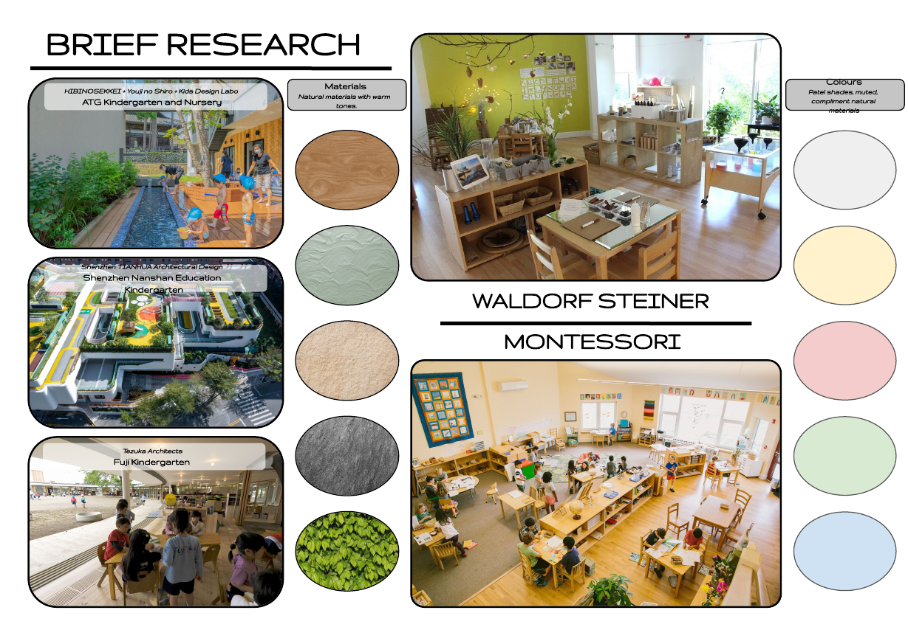
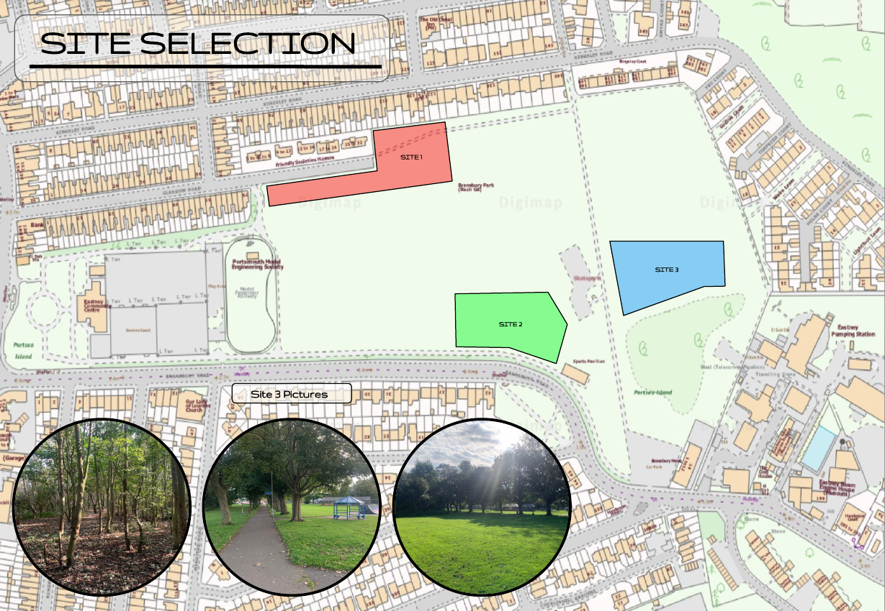

Nursery Design · November 2024
Nursery Design · November 2024
Overview
A new nursery within Barnsbury Park, Eastney — a low-rise timber-clad building sized for children rather than adults. The brief demanded spaces that respond to how young children actually move, perceive, and inhabit space, drawing on Montessori and Waldorf Steiner pedagogy as design frameworks.
Three sites within the park were assessed before settling on the northern edge, which offered good access from Eastney Road bus stops, sufficient separation from the odour of the Eastney Pumping Station, and proximity to mature trees providing natural shade and a backdrop to the outdoor play areas.
The building is organised as a low, C-shaped plan with connected rooms flowing into each other rather than separated by closed doors. Rooms are sized and detailed for their specific age group: baby area, nappy change, toddler space, preschooler room. A first-floor outdoor play deck extends the usable area without increasing the footprint.
Portholes in the boundary wall are placed at child height, giving children their own relationship with the street. Large indoor-outdoor zones, nooks sized for hiding, and a raised platform within the main play space create spatial variety without ornament.
Design
Circular openings in the boundary wall are positioned for children, not adults — giving children their own view onto the street and a sense of ownership over the threshold.
Rooms flow into each other rather than separating behind closed doors, creating visual communication between spaces and allowing staff to supervise across zones.
Scaled for children: arched recesses and low-ceilinged alcoves sized to give a sense of enclosure without the anxiety of full separation from the main space.
A change in floor level within the main play area creates opportunity for movement, climbing, and spatial exploration without requiring external equipment.
The upper floor extends into a sheltered outdoor play area, separating age groups and doubling the usable external space without increasing the building's footprint.
Abstract shapes in muted pastels across the outdoor play surface suggest play without prescribing it — an open-ended prompt rather than a fixed activity zone.
Project Boards


